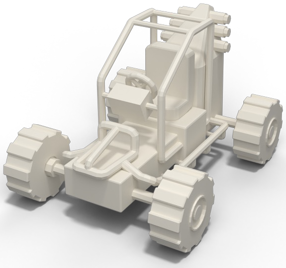
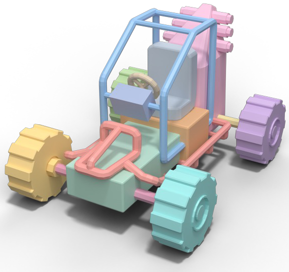
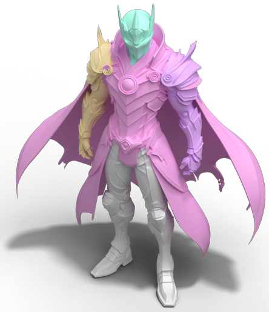
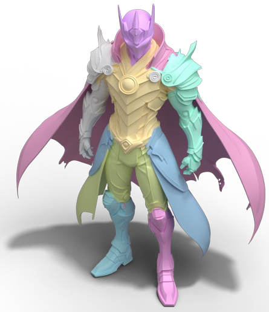
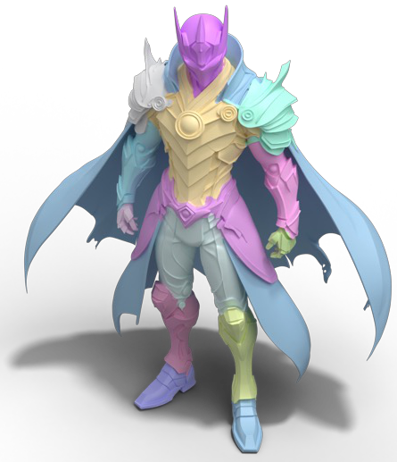
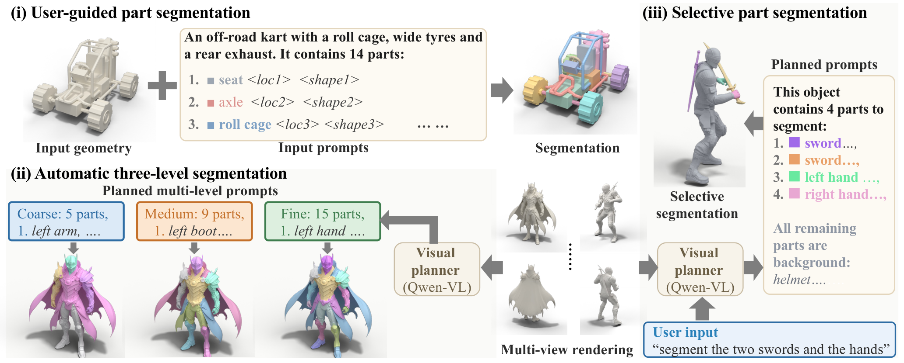

TEXT-CONTROLLED 3D PART SEGMENTATION
FlexPartText-Controlled Semantics-Aware 3D Part Segmentation
at Flexible Granularity
One model. Different prompts. The partition you ask for.
WHAT YOU ASK FOR IS WHAT YOU GET
Your mesh.
Your parts. Your level of detail.
A 3D asset admits many useful decompositions. FlexPart lets text specify both how finely to divide a mesh and which semantic parts to extract. A control prompt lists part names with location and shape descriptions; the model assigns discrete part identities directly to the mesh faces.
One segmentation model supports manually authored prompts, automatic coarse-to-fine partitions, and selective extraction. An optional visual planner completes the prompt from mesh renderings and a simple user request.
Three ways to ask. One model to answer.
Geometry + a control prompt → FlexPart → a 3D part partition.

An off-road kart with 14 parts:
1. seat <location> <shape>
2. axle <location> <shape>
3. roll cage <location> <shape>
…

Write the part inventory for precise control. Semantic names, locations and shapes tell the model what each label means.



Change the prompt to change the granularity. All three partitions use the same input geometry and the same segmentation model.
“Segment the two swords
and the hands.”
The visual planner turns the request and mesh views into a control prompt.
1. sword on the back
2. sword in the hand
3. left hand
4. right hand
All remaining parts: background.
Name what matters. The selected parts receive distinct labels and the prompt explicitly assigns the remaining parts to background.

Flexible parts on generated geometry.
Four Hunyuan3D 3.1 assets from the paper, each shown at coarse, medium and fine granularity.
Tracked machine
Sci-fi blaster
Armored character
Winged robot
Three granularities, side by side. A fixed camera and synchronized model rotations make the parts easy to compare.
FlexPart
Text-Controlled Semantics-Aware 3D Part Segmentation at Flexible Granularity
what you ask for
is what you get